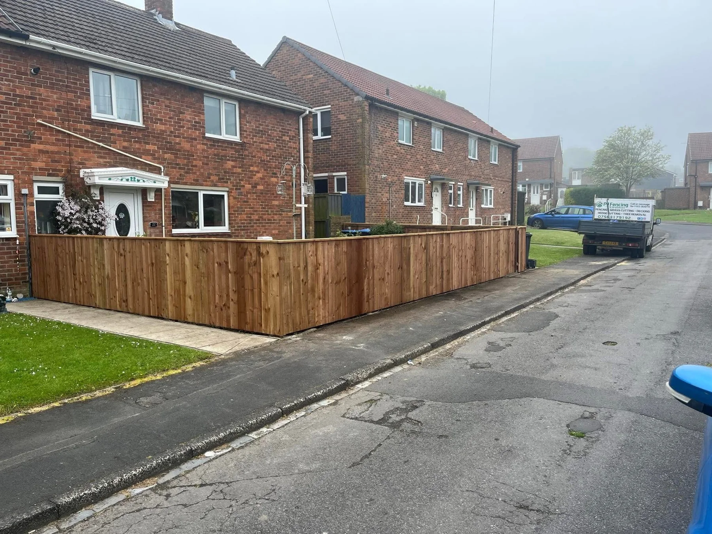
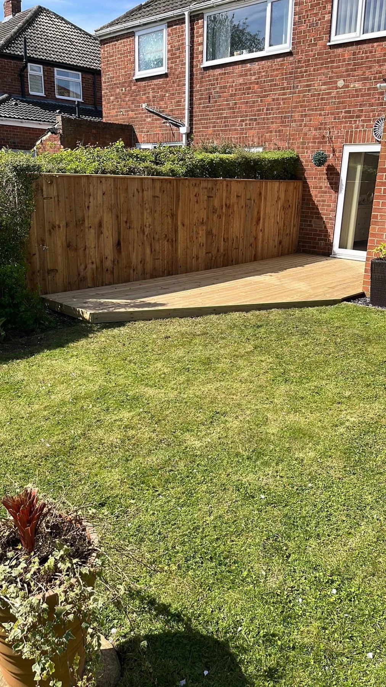

PJ FENCING & GROUNDCARE
Better boundaries.
More room to enjoy.
Timber fencing, decking and groundcare. Practical outdoor spaces, from a fresh garden boundary to a place to sit back and relax.
FROM THE BOUNDARY INWARDS
Strong lines.
Welcoming spaces.
A timber fence can bring privacy and definition. A deck can give you a new place to gather. A well-kept lawn ties the garden together.
PJ Fencing & Groundcare works across fencing, decking, grass cutting, hedge cutting and tree removal. Send a few photos and tell us what your outside space needs.
Talk through your project →

MORE THAN A PLACE TO SIT
Take life
outside.
Timber decking creates a defined space beside the home. A covered deck brings together seating, shelter and open views, with slatted balustrades finishing the edges.
Explore decking & timber work →PJ PROJECT GALLERY
The work.
From fence to finish.
Fencing, lawns, decking and timber structures. Tap a photograph to explore the full view.
GARDENS WITH DEFINITION
Fresh boundaries.
Space to breathe.
Vertical timber boards frame the garden, while lawns and paved areas keep the layout clear. These are individual completed projects from the supplied portfolio.
Find your fencing finish →PJ FENCING & GROUNDCARE
Make the most
of your outdoors.
From the fence line to the lawn, PJ offers practical work for gardens and outside spaces.
Timber fencing to define your space and complement the garden.
Decking and timber projects that make space for relaxing and gathering.
Grass cutting, hedge cutting and tree removal enquiries. Share your postcode to discuss the work and availability.
BEFORE WE GET STARTED
A few useful answers.
What work can I enquire about?
Fencing, decking, grass cutting, hedge cutting and tree removal. You can also ask about the timber shelters and garden work shown in the portfolio.
What should I send for a quote?
Send your postcode, a few photographs, approximate measurements and a description of the work. Mention access restrictions or existing fencing that needs removing.
Do you cover my area?
Send your postcode by WhatsApp or call to confirm availability for your property.
Does the form send my message automatically?
No. It opens WhatsApp with your chosen service and details ready to review. Add photos and send the message when you are ready.
LET’S TALK OUTDOORS
Your project.
Our next conversation.
Tell PJ what you want to change. Send your postcode, photographs and a few details to discuss your fencing, decking or garden work.
PJ FENCING & GROUNDCARE
Ready to get
your garden sorted?
Talk to PJ about your fencing, decking or groundcare project.